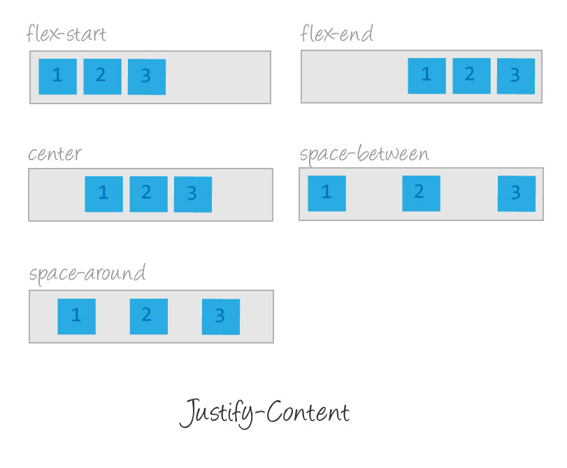

Hello, guys, my name is Nadzeya, I’m juniour software development.
The topic of my presentation is Grid and Flexbox.
## What is Grid and Flexbox?
Flexbox - one-dimensional layout model
Grid - two-dimensional layout model
Flexbox layout distributes space along a single column or row. Like float layouts, but better!
Flexbox, was designed as a one-dimensional layout model. flexbox gives us complete control over the alignment, direction, order, and size of our boxes.
Grid layout divides space into columns & rows. Like table layouts, but better! CSS Grid Layout introduces a two-dimensional grid system to CSS.
## Why do we love them?
## What is the difference between them?
Flexbox is designed for component layouts inside pages - navigations, forms, paginations
Grid dealing with full page layouts
- Firstly, One important difference between these two technologies is that with Flexbox you have to work with one-dimensional
layouts, so you always need to think about your layout either as rows or columns at a specific time. With CSS Grid, you can work in a two-dimensional way, which means you can work
with columns and rows at the same time!
- Secondly, It is worth mentioning that flexbox is designed for *component layouts* inside pages, to be precise, for navigations, forms, paginations, etc.
When dealing with *full page* layouts, its is better to use a CSS3 Grid Layout.
- The flex-direction property defines in which direction the container wants to stack the flex items.
- The flex-wrap property specifies whether the flex items should wrap or not.
- The justify-content property is used to align the flex items.
- The align-items property is used to align the flex items vertically.
- The flex-grow property specifies how much a flex item will grow relative to the rest of the flex items.
- The order property can change the order of the flex items
- The align-content property is used to align the flex lines.
- The align-self property specifies the alignment for the selected item inside the flexible container.
- There are Also flex-shrink and flex basis property and flex (this is a set of flex grow, flex-shrink and flex-basis)
- The flex-shrink property specifies how much a flex item will shrink relative to the rest of the flex items.
- The flex-basis property specifies the initial length of a flex item. It has a priority comparing with width property.
First steps: create a container and put inside items
html:
.parent {
display: flex;
}
The first step in using flexbox is to turn one of our HTML elements into a flex container. We do this with the display property.
By giving it a value of flex, we’re telling the browser that everything in the box should be rendered with flexbox instead of the default box model.
The flex-direction property defines in which direction the container wants to stack the flex items:
- The column value stacks the flex items vertically (from top to bottom)
- The column-reverse value stacks the flex items vertically (but from bottom to top)
- The row value stacks the flex items horizontally (from left to right)
- The row-reverse value stacks the flex items horizontally (but from right to left)
The flex-wrap property specifies whether the flex items should wrap or not:
- The wrap value specifies that the flex items will wrap if necessary
- The nowrap value specifies that the flex items will not wrap (this is default)
- The wrap-reverse value specifies that the flexible items will wrap if necessary, in reverse order

The justify-content property is used to align the flex items:
- The center value aligns the flex items at the center of the container
- The flex-start value aligns the flex items at the beginning of the container (this is default)
- The flex-end value aligns the flex items at the end of the container
- The space-around value displays the flex items with space before, between, and after the lines
- The space-between value displays the flex items with space between the lines
Responsible design with flexbox layout
An example how we can implement responsible design using flex-box
- The amount of columns and rows we can do with grid-template-columns and grid-template-rows
We can do it with grid-template-columns and grid-template-rows. We can use percentage, px, fraction,
auto and their combination.
- The gap CSS property sets the gaps (gutters) between rows and columns.
- The grid-area property can be used as a shorthand property for the grid-row-start, grid-column-start, grid-row-end and
- the grid-column-end properties.
- The grid-area property can also be used to assign names to grid items.
- The grid-template-areas CSS property specifies named grid areas.
First step: create a container and put inside items
html:
.grid-container {
display: grid;
}
- To create grid layout is easy. You should do it in a few steps:
in html: create container:
and put into your elements
- in css:
add to continer display: grid
Next step is to determine the columns and rows in the grid and their size.
.grid-container {
display: grid;
grid-template-columns: auto auto; /* 2 columns */
grid-template-rows: auto auto auto; /* 3 rows */
grid-gap: 10px;
background-color: #2196F3;
}
- Next step is to define how many columns and rows we have in grid and their size. In our example we define 2 columns and 3 rows with auto size.
- We can do it with grid-template-columns and grid-template-rows.
- We add grid gap property 10px.
Result:
Usage grid-template-areas to define position of items inside grid
.grid-container {
display: grid;
grid-template-areas: "logo stats"
"score stats"
"board board"
". controls";
}
.logo { grid-area: logo; }
.score { grid-area: score; }
.stats { grid-area: stats; }
.board { grid-area: board; }
.controls { grid-area: controls; }
Result:
Responsible design with grid layout
An example how we can implement responsible design using grid
92% of global website traffic supports CSS Grid and 98.61% - Flexbox
... That sounds good!!!
Before we end of presentation we have to talk about browser support as well.
92% of global website traffic supports CSS Grid and 98.61% - Flexbox.
Summary:
- Flexbox and Grid are powerful tool
- They make code clear
- Friendly to flexible adaptive design
- Easier to maintain
- Solved problems with vertical alignment and positioning elements
- Highly supported by browsers
- CSS Grid is best used for two-dimensional layouts, meaning columns and rows. Think big picture, and overall layout of the page.
- Flexbox works best in one-dimension (columns or rows). Think individual content areas, such as a menu or sidebar.
- There’s no reason to only use Grid or Flexbox exclusively.
- They work best when used together, and doing such will leave you with much cleaner and maintainable code.
Thank you for attention!!!
Thanks for listening!
if you have any questions, I'd be happy to answer them now.